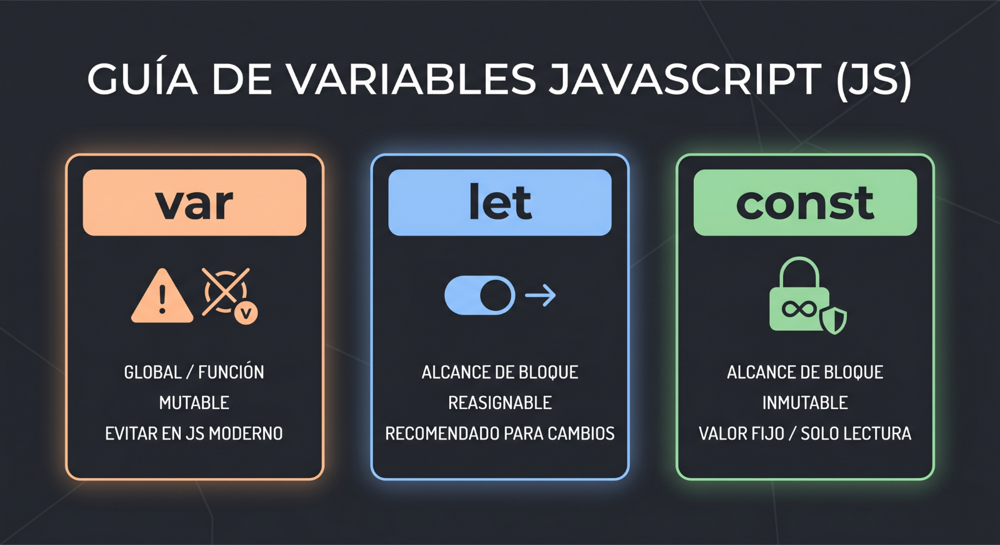

Manejo de Variables
Var
Es la forma antigua de declarar variables. Tiene
un alcance global o de función, lo que significa
que puede ser accesible desde lugares inesperados
y permite volver a declarar la misma variable sin que
el sistema muestre un error, lo que suele causar fallos
en el código moderno.
var nombre = "Gabriel";
var edad = 18;
var esEstudiante = true;
Let
Es la forma moderna de declarar variables. Tiene un alcance de bloque, lo que significa
que solo es accesible dentro del bloque donde se declara, evitando problemas de scope
que pueden surgir con var.
let nombre = "Gabriel";
let edad = 18;
let esEstudiante = true;
Const
Es la forma de declarar constantes en JavaScript. Una vez asignado un valor,
no puede ser reasignado ni redeclarado.
const CI = 33863444;
const NOMBRE = "Gabriel";
const EDAD = 18;

Ciclos
Los ciclos son estructuras de control que permiten repetir un bloque de código
varias veces. En JavaScript, existen diferentes tipos de ciclos, como el ciclo for,
el ciclo while y el ciclo do-while.
-
Ciclo for
for (let i = 0; i < 10; i++) {
console.log(i);
}
-
Ciclo while
let i = 0;
while (i < 10) {
console.log(i);
i++;
}
-
Ciclo do-while
let i = 0;
do {
console.log(i);
i++;
} while (i < 10);
Condicionales
JavaScript también contiene estructuras condicionales.
Son herramientas especializadas en la toma de decisiones
dentro del código; básicamente, le dicen al navegador qué
camino debe seguir según la situación.
-
Estructura if y else
La combinación if y else funciona como una bofurcación en el camino:
el if evalúa si una condición es verdadera para ejecutar un bloque de código
específico, mientras que el else actúa como un respaldo automático que se
ejecuta inmediatamente si esa condición resulta ser falsa.
let velocidad = 52;
if (velocidad > 50) {
console.log("Velocidad alta.");
} else {
console.log("Velocidad normal.");
}
-
Estructura else if
Permite comprobar una nueva condición específica en caso de que las anteriores hayan fallado.
Es ideal para encadenar múltiples evaluaciones en un orden jerárquico antes de llegar al final.
let nivel = 2;
if (nivel === 1) {
console.log("Nivel inicial.");
} else if (nivel === 2) {
console.log("Nivel intermedio.");
} else {
console.log("Nivel avanzado.");
}
-
Estructura Switch
Evalúa una única variable y compara su valor directamente con una lista de casos
predefinidos. Es la alternativa más limpia y organizada para evitar acumular
demasiados if y else if seguidos.
let nivel = 2;
switch (nivel) {
case 1:
console.log("Nivel inicial.");
break;
case 2:
console.log("Nivel intermedio.");
break;
default:
console.log("Nivel avanzado.");
}
Funciones
-
Funciones normales
Las funciones normales se declaran utilizando la palabra clave function,
tienen la ventaja de admitir hoisting y poseen su propio contexto para la palabra clave this.
// Declaración
function saludar(nombre) {
return "Hola, " + nombre;
}
// Llamada a la función
saludar("Jose");
-
Funciones flecha
Por otro lado, las funciones flecha son una alternativa moderna que utiliza el
operador => para reducir la sintaxis al mínimo, permitiendo omitir las llaves y la
palabra return si el bloque tiene una sola línea; además, heredan el contexto de this.
// Declaración
const saludarFlecha = (nombre) => "Hola, " + nombre;
// Llamada a la función
saludarFlecha("Jose");
Enlazamiento con HTML
Para que el navegador ejecute JavaScript, debes conectarlo al documento HTML mediante la etiqueta <script>. Tienes dos formas principales:
-
Script Interno
El código se escribe directamente en el archivo HTML. Ideal para scripts muy cortos.
<script>
console.log("Hola desde el HTML");
</script>
-
Script Externo
El código se guarda en un archivo .js aparte y se vincula usando el atributo src. Es la forma más limpia y recomendada.
<script src="codigo.js"></script>
Ejemplo de codigo de JavaScript
Este un pequeño programa de gestion de notas de un trimestre, que tiene 7 estudiante por predeterminado y permite añadir todavia
mas estudiantes, calcula el promedio de sus notas y calcula cuantos aprobaron y cuantos no/
Programa Francisco y Jose Padrino
const listaEstudiantes = [
{ nombre: "Ana", apellido: "Ramos", cedula: "3265895", nota1: "78", nota2: "85", nota3: "92", nota4: "88", promedio: "85.75", aprobado: "Aprobado" },
{ nombre: "Mario", apellido: "López", cedula: "19564513", nota1: "64", nota2: "70", nota3: "58", nota4: "73", promedio: "66.25", aprobado: "Aprobado" },
{ nombre: "Sofía", apellido: "García", cedula: "40555555", nota1: "95", nota2: "90", nota3: "93", nota4: "97", promedio: "93.75", aprobado: "Aprobado" },
{ nombre: "Diego", apellido: "Pérez", cedula: "67677676", nota1: "55", nota2: "62", nota3: "48", nota4: "60", promedio: "56.25", aprobado: "Reprobado" },
{ nombre: "Laura", apellido: "Suárez", cedula: "1505161", nota1: "82", nota2: "79", nota3: "88", nota4: "91", promedio: "85.00", aprobado: "Aprobado" },
{ nombre: "Carlos", apellido: "Mejía", cedula: "10023236", nota1: "69", nota2: "71", nota3: "67", nota4: "74", promedio: "70.25", aprobado: "Aprobado" },
{ nombre: "Mariana", apellido: "Duarte", cedula: "32198407", nota1: "88", nota2: "85", nota3: "90", nota4: "87", promedio: "87.50", aprobado: "Aprobado" }
]
// Obiene referencia de la tabla
let tabla = document.getElementById("tablaEstudiantes");
// Limpia el tbody ante de insertar los estudiantes
let tbody = document.querySelector("#tablaEstudiantes tbody");
function renderTable() {
tbody.innerHTML = "";
let numAprobados = 0;
// Se insertan todos los estudiantes hasta ahora
for (let estudiante of listaEstudiantes) {
let fila = tbody.insertRow();
if (estudiante.aprobado === "Aprobado") numAprobados++;
for (let valor of Object.values(estudiante)) {
fila.insertCell().textContent = valor;
}
}
// Actualiza contadores si existen los elementos
let refAprobados = document.getElementById("aprobados");
if (refAprobados) refAprobados.textContent = numAprobados;
let refReprobados = document.getElementById("reprobados");
if (refReprobados) refReprobados.textContent = listaEstudiantes.length - numAprobados;
}
// Render inicial
renderTable();
// Obtiene referencia del formulario
const formEstudiantes = document.getElementById("formEstudiantes");
formEstudiantes.addEventListener("submit", (event) => {
event.preventDefault(); // Detiene el comportamiento habitual a enviar el formulario
// Obtiene la entrada del nuevo estudiante y lo convierte a un objeto
let nuevoEstudiante = Object.fromEntries(new FormData(formEstudiantes));
if (listaEstudiantes.some(est => est.cedula === nuevoEstudiante.cedula)) {
alert("Ya existe un estudiante con esa cedula");
return;
}
// Promedio de notas
nuevoEstudiante.promedio = promediar([nuevoEstudiante.nota1, nuevoEstudiante.nota2, nuevoEstudiante.nota3, nuevoEstudiante.nota4]);
nuevoEstudiante.aprobado = nuevoEstudiante.promedio >= 65 ? "Aprobado" : "Reprobado";
// Guarda informacion del nuevo estudiante en un arreglo
listaEstudiantes.push(nuevoEstudiante);
// Volvemos a renderizar la tabla y actualizar contadores
renderTable();
formEstudiantes.reset(); // Resetea el formulario
});
function promediar(notas = [nota1, nota2, nota3, nota4]) {
for (let i in notas){
notas[i] = parseInt(notas[i]);
}
return (notas[0] + notas[1] + notas[2] + notas[3]) / notas.length
}
Programa Gabriel y Geremy
const readline = require('node:readline/promises');
const { stdin: entrada, stdout: salida } = require('node:process');
const rl = readline.createInterface({ input: entrada, output: salida });
async function calcularNotas() {
// Arreglos
const estudiantes = [];
const aprobados = [];
const reprobados = [];
console.log("=== INGRESO DE NOTAS (7 ESTUDIANTES) ===");
// Bucle for
for (let i = 0; i < 7; i++) {
let nombre = await rl.question(`\nNombre del estudiante ${i + 1}: `);
// Pedir las notas
let n1 = parseFloat(await rl.question(` Nota 1: `));
let n2 = parseFloat(await rl.question(` Nota 2: `));
let n3 = parseFloat(await rl.question(` Nota 3: `));
let n4 = parseFloat(await rl.question(` Nota 4: `));
let promedio = (n1 + n2 + n3 + n4) / 4;
//Crear un objeto
let estudiante = {
nombre: nombre,
nota1: n1,
nota2: n2,
nota3: n3,
nota4: n4,
promedio: promedio
};
// Guardar el estudiante en el arreglo
estudiantes.push(estudiante);
// Condicional, solo se guarda la variable nombre del estudiante en el arreglo de aprobados o reprobados
if (promedio >= 10) {
aprobados.push(nombre);
} else {
reprobados.push(nombre);
}
}
// Salida de datos
console.log("\n=== HOJA DE CÁLCULO: RESULTADOS ===");
// imprime los datos del arreglo estudiantes en una tabla
console.table(estudiantes);
console.log("Aprobados (" + aprobados.length + "): " + aprobados);
console.log("Reprobados (" + reprobados.length + "): " + reprobados);
rl.close();
}
calcularNotas();
<-Regresar al inicio